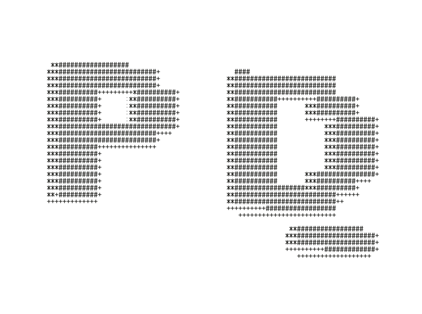
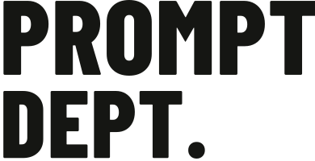

Prompt Dept. identity
A P. A D. A cursor that never clocks out. Our own little department of human supervision.

The everyday mark. Caps, cuffs, labels.
The ASCII edition. Big prints, screens, late nights.

Condensed type. Room for the joke.
HUMAN SUPERVISION REQUIRED
Label layout study. Production proof still needed.
BUILT TO LEAVE
THE SCREEN.
The solid mark and ASCII edition share the same silhouette. Use the compact mark where stitches need room. Give the characters space on larger prints.
Transparent SVG artwork, with outlined wordmarks. Ink and bone versions. Physical print and embroidery samples remain the next step.
Pick the designs that deserve it ↗